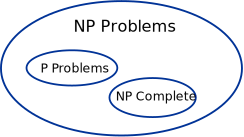
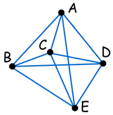

NP-Complete - A Rough Guide
This is a rough guide to the meaning of "NP-Complete". It is not intended to be an exact definition, but should help you to understand the concept.
These are just my personal ideas and are not meant to be "rigorous".
Its All About "Time to Solve"
When you measure how long a program takes to run when it is given more and more difficult problems (such as sorting a list of 10 items, 20 items, 30 items etc) you can plot the times and come up with a function.

Example: a program's time increases by x2
So a problem that is twice as hard takes 4 times as long.
That program is in "P", as it is solvable in "Polynomial" time.
In this case the polynomial is:
t = x2
But if the time goes up exponentially or factorially, or something that exceeds what a polynomial can do, it is NOT in "P" (it is not solvable in "Polynomial" time).
P: can be solved in Polynomial time.
(How long it takes is defined by a polynomial)
Amazing Computer can do what normal Computers can't
Now, the "N" in "NP" refers to the fact that you are not bound by the normal way a computer works, which is step-by-step. The "N" actually stands for "Non-deterministic". This means that you are dealing with an amazing kind of computer that can run things simultaneously or could somehow guess the right way to do things, or something like that.
So this "N" computer can solve lots more problems in "P" time - for example it can just clone copies of itself when needed.
It is not a Super Computer (they are just very fast normal computers), it is really a "Non-deterministic" computer, but I am calling it an Amazing Computer to give you the idea!
So, programs that take dramatically longer as the problem gets harder (i.e. not in "P") could be solved quickly on this amazing "N" computer and so are in "NP". Thus "NP" means "we can solve it in polynomial time if we can break the normal rules of step-by-step computing".
NP: can be solved in Polynomial time using a
Non-deterministic method.
(also includes P problems)
Amazing Computers can also do what normal Computers can

Since this amazing "N" computer can also do anything a normal computer can, we know that "P" problems are also in "NP".
So, the easy problems are in "P" (and "NP"), but the really hard ones are *only* in "NP", and they are called "NP-complete".
It is like saying there are things that People can do ("P"), there are things that SuperPeople can do ("SP"), and there are things *only* SuperPeople can do ("SP-complete").
NP-Complete: can be solved in Polynomial time
only using a Non-deterministic method.
NP-Complete may not last
Oh, one more thing, it is believed that if anyone could *ever* solve an "NP-Complete" problem in "P" time, then *all* "NP-complete" problems could also be solved that way by using the same method, and the whole class of "NP-Complete" would cease to exist.
Traveling Salesman Problem

The classic example of "NP-Complete" problems is the Traveling Salesman Problem.
Imagine you need to visit 5 cities on your sales tour. You know all the distances. Which is the shortest round-trip to follow? ABCEDA? ADECBA?
An obvious solution is to check all possibilities.
But this only works for small problems. If you add a new city it needs to be tried out in every previous combination.
So this method takes "factorial time": t = n!
(Actually t = (n-1)! but it is still factorial.)
Imagine the program solves a 20-city problem in 1 second, then
- a 21-city problem will take about 21 seconds to solve.
- And a 22-city problem will take about 462 seconds (over 7 minutes),
- and a 30-city problem will take 3 Million Years. Ouch!
Luckily, there are special ways to break the problem into sub-problems (called "dynamic programming", but the best still take exponential time: t = 2n (2 with an exponent of n)
So a program that solves 20 cities in 1 second will solve 30-cities in about 10 minutes, and 60-cities in about 35,000 Years (still a bit too long).
But if we had the "Amazing Computer" mentioned above it could, for example, create copies of itself to check all the possibilities, and hopefully solve the problem very quickly.
NP-Hard
When a problem's method for solution can be turned into an NP-Complete method for solution it is said to be "NP-Hard".
NP-Hard: as hard as any NP-problem, or maybe harder.
Anyway, I hope this "quick and dirty" introduction has helped you ... now go and read something more rigorous.